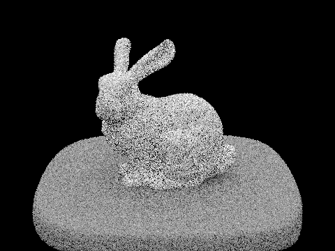
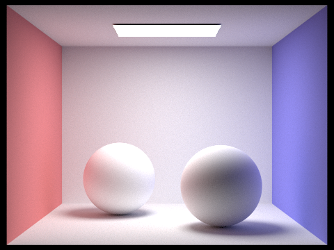

Overview
In this assignment, we implemented the fundamental processes of a physical-based renderer with pathtracing. We first generated camera rays and pixel samples, as well as implementing testing for triangle and sphere intersection. Then, we accelerated rendering by enabling the construction of a BVH and tests for intersecting a BVH. Later, we implemented hemisphere sampling and importance sampling to render images with realistic shading (direct illumination). This led on to us enabling full global illumination with indirect lighting effects. Lastly, we implemented an algorithm to enable adaptive sampling, which is useful for images with high variance.
Part 1: Ray Generation and Scene Intersection (20 Points)
Walk through the ray generation and primitive intersection parts of the rendering pipeline.
Ray Generation: A camera object defines a virtual camera with a position and orientation, and generate_ray() generates a ray for each pixel. generate_ray() takes in the normalized image coordinates (x, y) and outputs a ray in world space. The camera object transforms the image coordinates into camera space and generates a ray in camera space that starts from the camera position and passes through the corresponding point on the virtual camera sensor.
First, we calculated the coordinates of the sensor's bottom-left and top-right corners are calculated as follows:
Bottom-Left: (-tan(hFov/2), -tan(vFov/2), -1)
Top-Right: (tan(hFov/2), tan(vFov/2), -1)
In the formulas above, hFov and vFov are angles for the field of view along the X and Y axes.
We then transformed the image coordinates from image space to camera space using these equations:
camera_space_x = bottom_left_corner.x + x*(top_right_corner.x - bottom_left_corner.x)
camera_space_y = bottom_left_corner.y + y*(top_right_corner.y - bottom_left_corner.y)
In the equations above, x and y represent the input image coordinates and bottom_left_corner and top_right_corner are the coordinates we calculate in the previous step.
Lastly we apply the camera-to-world rotation matrix to the direction 3DVector containing the camera space x and y coordinates, as well as the z coordinate set to -1.0. Then normalizing the resulting direction allows us to make a new ray object with origin pos and the normalized direction.
Primitive Intersection: Next, we locate the primitive object, such as spheres or triangles, that the ray intersects first. To do this, we calculate how far the ray travels before hitting each object and choose the object with the closest travel distance. When an object is intersected, we fill in an Intersection object with information such as the intersected object, the normal vector at the intersection point, the relevant BSDF for color computation in later parts, and when the intersection occurs.
Explain the triangle intersection algorithm you implemented in your own words.
We use the Moller-Trumbore Algorithm, as presented in lecture slides, to determine t and the barycentric coordinates (b1, b2, b3) of the intersection point on the plane of the triangle.
These coordinates are represented with reference to the three vertices of the triangle. If all the coordinates are greater than or equal to 0, less than 1, and sum to 1, then we can confirm that the intersection occurred within the triangle's plane. The algorithm also provides us with the distance between the intersection point and the origin of the ray. To determine the normal vector at the point of intersection, we calculate the weighted average of the normals at each vertex of the triangle. The weights are equivalent to the computed barycentric coordinates. If the barycentric coordinate conditions are met and the intersection occurs forwards in the direction of the ray, then we go ahead and update the new Intersection object with the relevant information mentioned in the previous section.
Show images with normal shading for a few small .dae files.

|

|

|

|
Part 2: Bounding Volume Hierarchy (20 Points)
Walk through your BVH construction algorithm. Explain the heuristic you chose for picking the splitting point.
The BVH is a binary tree with each node containing a bounding box, left and right children, and two iterators pointing to a list of scene primitives. The heuristic we chose for picking the splitting point was the centroids. Here is our algorithm for BVH construction:
1. Compute the bounding box of the primitives in the input list and create a new BVHNode with this bounding box, while also getting the mean for the centroids of the primitives' bounding boxes.
2. If the number of primitives in the input list is less than or equal to max_leaf_size, the we return the node as a leaf node.
3. Otherwise, find the axis along which to split the primitives. We do this by checking which axis's centroid has the largest spread by getting the extent of the bounding box.
4. We rearrange the primitives into two sides in the generator based on whether their centroid falls on the left or right of the split point by using the iter_swap method.
5. Recursively call construct_bvh() on each side of primitives and set the resulting nodes as the left and right children of the current node.
6. At the end, we return the current node.
Show images with normal shading for a few large .dae files that you can only render with BVH acceleration.
|
|

|
|
|
Compare rendering times on a few scenes with moderately complex geometries with and without BVH acceleration. Present your results in a one-paragraph analysis.
|
|
|
|
|
The teapot took 16 sec to render without BVH acceleration but 0.253 sec with the BVH. Similarly, the cow's render time dropped from 36 sec to 2.1 sec, and the beetle's dropped from 35 sec to 0.452s without. BVH acceleration renders the complex geometries significantly faster because each ray traverses the the BVH, which is a binary tree. Therefore, the time is reduced to O(log(N)) from O(N).
Part 3: Direct Illumination (20 Points)
Walk through both implementations of the direct lighting function.
Hemisphere Sampling: For each of the samples, we take a hemisphere sample. We transform this hemisphere sample by applying the object-to-world space rotation matrix, and set that as the direction of a new ray with origin hit_p. We set the min_t of this ray as the constant EPS_F, and if the ray intersectsthe BVH then we estimate how much light arrived at the intersection point. We add the following value to 3DVector L_out:
L_out += intersection_bsdf_emission * intersection_bsdf_sample * hemishphere_sample.z * 2.0 * PI / num_samples
At the end, we return L_out, which is the average direct lighting for num_samples samples.
Importance Sampling: We want to enable rendering images consisting of only point lights. We do this by sampling straight from the light source. For each light source we sample from it using sample_L(), and then make a ray from the sample. If the ray intersects the BVH and the dot product of sample_L's direction vector and the intersection's normal is greater than 0, then we would add the following value to 3DVector L_light:
L_light += L_sample * intersection_bsdf_sample * dot(wi_d, isect.n) / PDF
We set the max_t of the ray to distToLight to check that the hit_p would be behind the light if the intersection is valid. If the light source is a point source (is_delta_light() is true), then we would move onto the next light source after adding L_light to L_out. If the light source is not a point source, then we want to keep taking ns_area_light total samples for the light source and add this value to L_out:
L_out += L_light / ns_area_light
At the end, we return L_out.
Show some images rendered with both implementations of the direct lighting function.
| Uniform Hemisphere Sampling | Light Sampling |
|---|---|
|
|
|

|
|
Focus on one particular scene with at least one area light and compare the noise levels in soft shadows when rendering with 1, 4, 16, and 64 light rays (the -l flag) and with 1 sample per pixel (the -s flag) using light sampling, not uniform hemisphere sampling.
|
|
|
|
|

|
The amount of noise in the soft shadows of the room and of the bunny decreases as we increase the number of light rays. This is also due to the decrease in variance as samples increase. When the number of light rays is 1, it is noisy because the sample can only either hit the light or not, aka be either lit or dark. Whereas 64 samples decreases noise and make smoother soft shadows.
Compare the results between uniform hemisphere sampling and lighting sampling in a one-paragraph analysis.
| Uniform Hemisphere Sampling | Light Sampling |
|---|---|
|
|
|
Above are uniform hemisphere sampling and importance sampling on CBbunny.dae. The results are quite different, where the uniform hemisphere sampling image produced noisy and more grainy than the importance sampling image. This is due to our rays hitting the area light and contributing a pretty even amount in importance sampling. Uniform sampling has more variance since it averages rays that hit the light and also those that do not contribute, leading to more noise.
Part 4: Global Illumination (20 Points)
Walk through your implementation of the indirect lighting function.
We implemented multiple functions that accounted for various bounced rays of indirect light that resulted in a better lighting rendered representation of our scene. Firstly, we implemented zero_bounce_radiance, which only took the emission of the object into account for calculating the radiance. Secondly, we implemented one_bounce_radiance, which used the direct lighting function in order to account for direct lighting directly intersecting an object. Thirdly, we implemented at_least_one_bounce_radiance, which recursively leverages one_bounce_radiance in order to accumulate direct and indirect lighting. Here are the steps we implemented:
- Calculate the hit_point and direction.
- Calculate the one bounce radiance @ the intersection point.
- Sample BSDF @ intersection point in order to get the incoming direction and PDF.
- If the maximum ray depth > 1, decide whether to continue the ray using Russian roulette.
- If continuing the ray, create a new ray and intersect it with the scene using a BVH.
- Recursively compute the radiance from the bounced ray by calling at_least_one_bounce_radiance again with an updated bounce_ray.
- Combine the radiance contributions from one bounce and bounced rays via BSDF, cosine of angle between surface normal and incoming direction, and PDF of the sampled direction.
- Return the aggregate combined radiance.
Show some images rendered with global (direct and indirect) illumination. Use 1024 samples per pixel.
|
|
|
Pick one scene and compare rendered views first with only direct illumination, then only indirect illumination. Use 1024 samples per pixel. (You will have to edit PathTracer::at_least_one_bounce_radiance(...) in your code to generate these views.)
|
|

|
The direct lighting sample doesn't incorporate any of the bounced light off the wall, so there is no leaking of the wall color on to the object (bunny). The indirect lighting sample clearly demonstrates the light bouncing off of the red and blue walls on to the bunny, evidenced by the colorful light on either side of the bunny, and also has much less harsh shadows than the direct lighting sample.
For CBbunny.dae, compare rendered views with max_ray_depth set to 0, 1, 2, 3, and 100 (the -m flag). Use 1024 samples per pixel.
I DID the wrong dae, the right is currently running -- will update as soon as it is done|
|
|
|
|
|
|
|
As the number of max ray depth increases, more and more indirect lighting is evident in the rendered images, evidenced by the increased amount of lighting where there was previously only dark shadows, and also by the increased amount of colored light on the sides of the bunny due to the light bouncing off the colored walls.
Pick one scene and compare rendered views with various sample-per-pixel rates, including at least 1, 2, 4, 8, 16, 64, and 1024. Use 4 light rays.
|

|
|
|
|
|
|
|
|
|
|
Clearly, as we increase the number of samples per pixel, we get less and less noisy renders.
Part 5: Adaptive Sampling (20 Points)
Explain adaptive sampling. Walk through your implementation of the adaptive sampling.
Adaptive sampling is a technique used to dynamically allocate more sampling time/compute/density to regions of the image that converge slower, and allocating less to regions that converge quicker. This is useful for scenes that have a high variance -- and is meant to optimize to create the highest quality image given some limited bound on the number of allowed samples. My adaptive sampling implementation is as follows:
- There is an upper bound on the number of samples per pixel.
- I loop through num_samples (the upper bound) times, and I aggregate the illumination at the current sample, as well as the squared illumination of the current sample. These are proxy sums that we later decompose into mean/variance/std_dev of illumination.
- At every samplesPerBatch loop iterations (which is a constant that specifies the discrete points at which we're allowed to terminate the sampling early), we calculate the mean and variance of the illumination using the aggregate sums.
- Then, the standard deviation and confidence interval are calculated from the variance and mean.
- If the current confidence interval is under a certain threshold (which is some constant maxTolerance * mean), the sampling loop terminates early, and the # of samples used is updated in the sampling rate buffer.
Pick two scenes and render them with at least 2048 samples per pixel. Show a good sampling rate image with clearly visible differences in sampling rate over various regions and pixels. Include both your sample rate image, which shows your how your adaptive sampling changes depending on which part of the image you are rendering, and your noise-free rendered result. Use 1 sample per light and at least 5 for max ray depth.
|
|
|
|

|

|